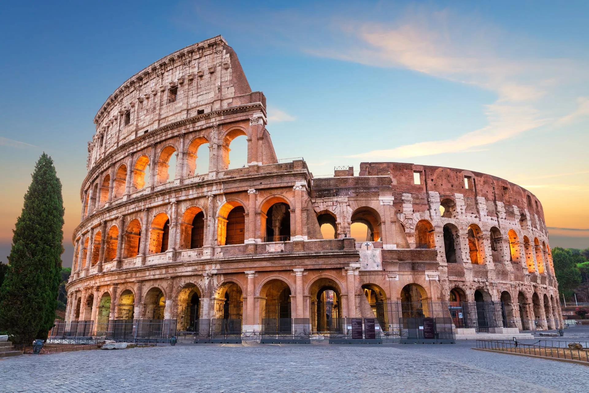
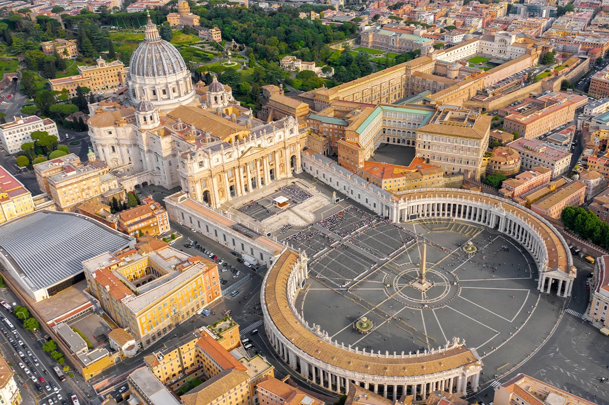
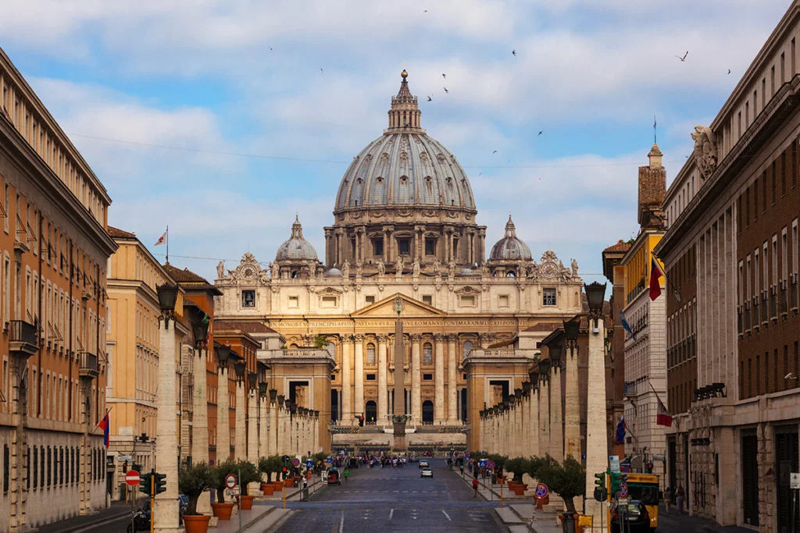
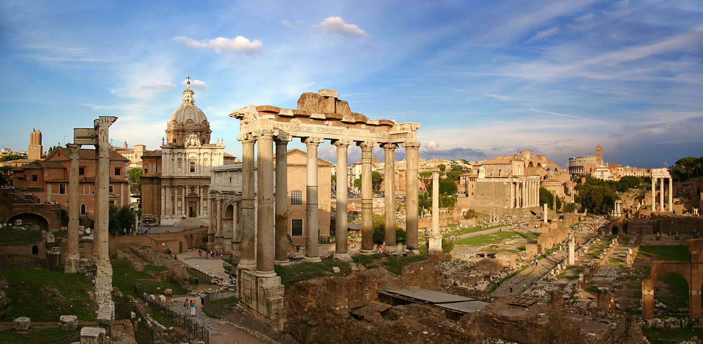

Rzym ::::: Paryż ::::: Tokio
Rzym – stolica i największe miasto Włoch, położone w środkowej części kraju nad rzeką Tyber i Morzem Śródziemnym, zarazem stolica regionu administracyjno-historycznego Lacjum. Centrum administracyjne ma powierzchnię 1287 km² i liczbę ludności 2 825 661, będąc trzecim co do wielkości miastem Unii Europejskiej. Miasto Stołeczne Rzym ma 4 331 856 mieszkańców. Rzym od starożytności znany jest jako Wieczne Miasto, a także „stolica świata”. Rzym jest metropolią o znaczeniu globalnym, a także dużym węzłem komunikacyjnym z jednym z największych międzynarodowych portów lotniczych w Europie, który obsługuje ponad 38 milionów pasażerów rocznie, rozbudowaną siecią autostrad i linii kolei dużych prędkości. Światowy ośrodek turystyczny z bardzo bogatymi zabytkami starożytności i średniowiecza (kościoły, bazyliki, Koloseum, pałace, akwedukty, fontanny i wiele innych budowli), niezwykle bogate muzea, nowoczesne osiedla mieszkaniowe na przedmieściach. W 1960 roku organizował Letnie Igrzyska Olimpijskie. W 2017 roku Rzym odwiedziło 9,5 mln turystów w ciągu roku. Znajdują się tu siedziby dwóch organizacji ONZ: organizacji do spraw Wyżywienia i Rolnictwa oraz Międzynarodowego Funduszu Rozwoju Rolnictwa. W granicach Rzymu, na prawym brzegu Tybru, leży miasto-państwo Watykan (łac. Status Civitatis Vaticanæ), będący enklawą na terytorium państwowym Włoch.
Koloseum

Koloseum (łac. Colosseum, wł. Colosseo), właściwie amfiteatr Flawiuszów (łac. Amphitheatrum Flavium) – amfiteatr w Rzymie, wzniesiony w latach 70–72 do 80 n.e. przez Wespazjana i Tytusa – cesarzy z dynastii Flawiuszów. Opis Jest to duża, eliptyczna budowla o długości 188 m i szerokości 156 m, obwodzie 524 m, wysokości 48,5 m, z pojemną widownią, która mogła pomieścić od 45 do 50 tysięcy widzów; z galeriami komunikacyjnymi oraz areną z systemem podziemnych korytarzy. W czterokondygnacyjnym podziale zewnętrznym zastosowano spiętrzenie porządków (najniższa kondygnacja w porządku toskańskim, druga w jońskim, trzecia w korynckim). Trzy niższe kondygnacje związane są z konstrukcyjnym układem arkad, czwarta, najwyższa została zaopatrzona tylko w małe okna.
Muzea Watykańskie

Muzea Watykańskie (wł. Musei Vaticani) – muzea publiczne Państwa Watykańskiego, powstałe ze zbiorów dzieł sztuki zgromadzonych przez poszczególnych papieży. Początki kolekcji związane są z kolekcją dzieł zgromadzonych przez Sykstusa IV i Juliusza II. Powiększone podczas pontyfikatów kolejnych papieży. Udostępnione publiczności już w 1787 roku w celu pogłębienia znajomości sztuki i kultury. Są jednym z najczęściej odwiedzanych muzeów świata.
Bazylika Świętego Piotra

Bazylika Świętego Piotra na Watykanie (wł. Basilica Papale di San Pietro in Vaticano; łac. Basilica Sancti Petri) – rzymskokatolicka bazylika na Wzgórzu Watykańskim, zbudowana w latach 1506–1626, na miejscu starszej bazyliki wczesnochrześcijańskiej, fundacji cesarza Konstantyna Wielkiego, jedna z czterech bazylik większych Rzymu oraz jedna z wielu bazylik papieskich (dawniej patriarchalnych), sanktuarium, jeden z najważniejszych ośrodków pielgrzymkowych.
Forum Romanum

Forum Romanum (Forum Magnum) – najstarszy plac miejski w Rzymie, otoczony sześcioma z siedmiu wzgórz: Kapitolem, Palatynem, Celiusem, Eskwilinem, Wiminałem i Kwirynałem. Główny polityczny, religijny i towarzyski ośrodek starożytnego Rzymu, miejsce najważniejszych uroczystości publicznych.
Fontanna di Trevi

Fontanna di Trevi (wł. Fontana di Trevi) – najbardziej znana barokowa fontanna w Rzymie, w rione Trevi (R. II). Została zbudowana z inicjatywy Klemensa XII w miejscu istniejącej wcześniej fontanny zaprojektowanej przez Leona Battiste Albertiego z 1435 r. Zasila ją woda doprowadzona akweduktem zbudowanym w 19 r. p.n.e. przez Agrypę, tym samym, który zasila fontannę Barcaccia znajdującą się u podnóża Schodów Hiszpańskich.